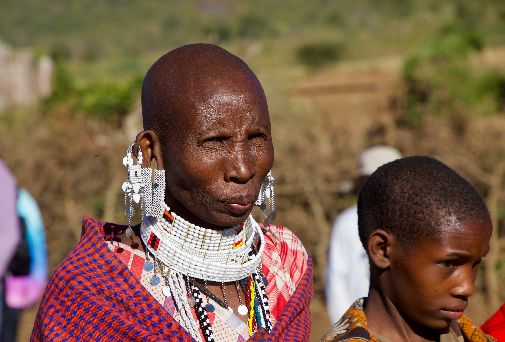
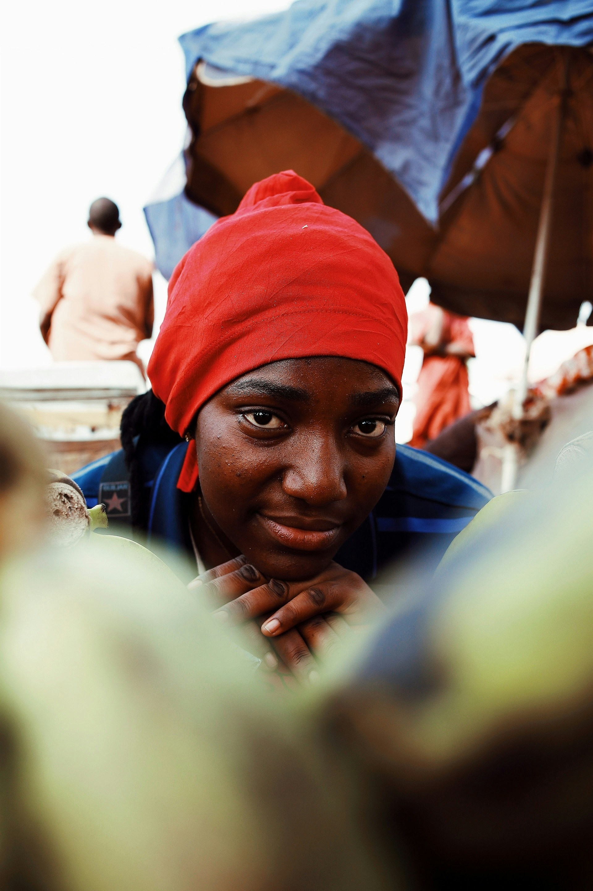

MENTAL HEALTH
& PSYCHOSOCIAL
SUPPORT
Creating safe spaces where individuals can be heard, supported, and guided toward healing, resilience, and a healthier future.
Healing From the Inside Out
Economic hardship takes a profound toll on mental health. Our program addresses what skills training alone cannot — the psychological wounds that poverty, trauma, and uncertainty leave behind.
In many informal settlements, the harsh economic environment — marked by unemployment, poverty, and uncertainty — has contributed to a growing burden of mental health challenges, particularly among young people.
Stress, anxiety, depression, substance abuse, and feelings of hopelessness are increasingly common, often compounded by limited access to professional support services.
Our Mental Health and Psychosocial Support Program responds to this urgent need by providing structured support that helps participants process trauma, manage stress, and build positive coping mechanisms for life.

A Hidden Crisis Among Mathare's Youth
In many informal settlements, the harsh economic environment—marked by unemployment, poverty, and uncertainty—has contributed to a growing burden of mental health challenges, particularly among young people. Stress, anxiety, depression, substance abuse, and feelings of hopelessness are increasingly common, often compounded by limited access to professional support services.

Support, Counselling, and Life Skills
Our Mental Health and Psychosocial Support Program responds to this urgent need by providing safe spaces where individuals can be heard, supported, and guided toward healing and resilience. The program offers structured psychosocial support sessions, counselling referrals, peer support groups, and community dialogues that help participants process trauma, manage stress, and build positive coping mechanisms.
We also focus on early identification of mental health challenges and community awareness, reducing stigma and encouraging open conversations around mental wellbeing. Through trained facilitators and peer mentors, young people are equipped with life skills such as emotional regulation, problem-solving, and healthy decision-making.
In addition, the program strengthens social support systems by connecting individuals to available health services and community resources, ensuring a more holistic approach to wellbeing.
By addressing both psychological and social dimensions of mental health, this program helps restore dignity, build resilience, and empower individuals—especially youth—to lead healthier, more stable, and productive lives.
Expected Outcomes
Healing the mind creates the conditions for lasting change — in individuals, families, and communities.
Trauma Processing
Participants gain tools to process past trauma and break free from cycles of pain that limit their potential.
Reduced Stigma
Community dialogues normalise conversations about mental health, making it easier to seek and offer support.
Life Skills
Emotional regulation, problem-solving, and healthy decision-making skills equip youth for stable, productive lives.
Peer Support Networks
Peer mentors create lasting support systems within communities, extending program impact beyond formal sessions.
Health Service Linkage
Participants are connected to available health services and community resources for a holistic approach to wellbeing.
Restored Dignity
Being heard and supported restores a sense of dignity and hope that is transformative for individuals in crisis.
Support Healing
in Our Community
Fund safe spaces, trained facilitators, and peer support programs that restore dignity and hope in Mathare.